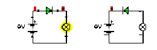

| DIODOS |
|
 En la imagen de la izquierda el diodo está conectado en polarización directa, es decir, el polo positivo del diodo va unido al positivo de la pila (y el negativo al negativo). En ese caso el diodo conduce y la bombilla se enciende. En cambio en la derecha el diodo está en polarización inversa, es decir, el polo positivo del diodo va unido al negativo de la pila (y por lo tanto el negativo va al positivo). En ese caso el diodo corta la corriente y la bombilla se queda apagada. |